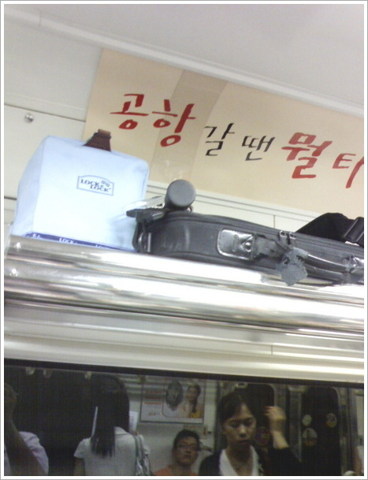

아침 출근 길, 지하철에 타자마자 손에 든 꾸러미들을 선반 위에 쓰러지지 않게 올려놓습니다. 오늘의 출근 길에는 손에 든 것이 많습니다. 일단 간만에 딱 들어맞은 일기예보의 빗소식 덕에 챙겨든 우산이 있고 언제나 함께하는 너덜너덜해진, 5년째 쓰고 있는 노트북 가방이 있습니다. 그 옆에는 바로 바로 점심에 챙겨먹을 도시락입니다.
오랜만에 아침 일찍 일어나는 부지런함 덕에 오늘은 특별히 마음먹고 점심에 먹으려고 도시락을 싸봤습니다. 반찬이라고 해봐야 김치와 김에 특별 반찬으로 북어찜(어머님이 특별히 마련해주신)이 전부이지만 좀 더 여유있게 아침에 일어나 도시락을 준비하는 과정에는 꽤 놀라운 즐거움이 있음을 알게 되었습니다.
또 어제는 잠자리에 들기 전에 다리미질을 해봅니다. 늘상 하는 다리미질이건만 이번에는 무릎을 꿇고 다리미질에 도전해봅니다. 뭔가 경건해지기도 하고 자세 교정에도 좋고 그리고 왠지 모르게 잡생각이 줄어드는 것 같아 조금 쥐가 날 것 같음에도 불구하고 참았습니다. 다리미질 그것에 집중하다보니 요새처럼 생각이 많고 많은 때에는 그러한 작은 일상의 일들에 집중하는 것이 의외로 효과적이라는 것을 배우게 되네요.
소니의 컴퓨터 사이언스 연구소에 근무하는 모기 겐이치로가 쓴 '뇌와 창조성' 중에서 다음과 같은 글귀가 있다고 합니다.(읽어보지는 못했어요)
살아가는 데는 중요한 것과 그렇지 않은 것이 있다. 그 가운데 중요한 것만 잡고 넘어가면 된다고 생각하는 것은 스스로의 사고를 인공 유리병 안에 가두는 것이다. 실제로 인간의 뇌는 일상에서 일어나는 자질구레한 사건의 영향을 받으면서 조금씩 계속 변화한다. 중요한 일회성의 사건은 일상으로부터 단절되어 연락도 없이 드러나는 것처럼 보이지만 실제로는 배후에 일상의 연속적인 역할이 숨어있다.
굳이 창조성을 위한 일상이 아니더라도 일상은 삶의 흐름을 유지시켜준다는 측면에서도 역시나 지나쳐서는 안되는 중요한 사건들입니다. 예전에는 일기와 블로그에 일상이 들어갈 틈이 별로 없었던 것 같습니다. 젊었을 때에는 그저 제가 나아가야 할 방향과 그 길에서 중요한 사건들만이 의미가 있었습니다. 하지만 조금씩 나이가 들어가고 조금씩 소소한 일상에 감사하는, 머리가 아니라 몸으로 감사하고 관심갖고 즐거워할 수 있는 자세에 마음이 동합니다.
공유하기 버튼
|
|


최근 덧글